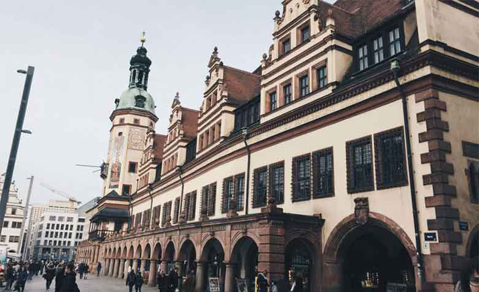

Visita uno de los Mercados Navideños más grandes de Alemania.
Abre del 25 de nov al 23 de dic,
sus seis áreas están ubicadas en sintonía con el
fascinante paisaje histórico del centro de la ciudad de Leipzig
Augustusplatz
Augustusplatz es la plaza más grande de Leipzig. Aquí puedes explorar
monumentos
históricos,
catedrales y
salas de concierto fácilmente a pie. En la plaza también se celebran märkte, konzerte und festivals durante todo
el
año.
Völkerschlachtdenkmal
O Völki como lo apodan en la ciudad. Es el monumento más importante de
Leipzig. Se
construyó
en
1913 para conmemorar los 100 años de la Batalla de las Naciones de 1813. En
esta
cruenta
batalla
se enfrentaron los ejércitos de Napoleón contra una coalición formada por:
Prusia,
Rusia,
Suecia
y Austria. Fue la primera derrota de la campaña de Napoleón.
Thomaskirche
Es mundialmente famosa por su coro, que es uno de los mejores y más antiguos
del
mundo. El
músico
Johan Sebastian Bach se desempeñó como director del coro durante 27 años.
Sus
restos
se
encuentran en la iglesia y fuera hay una estatua en su memoria. Actualmente
podemos
escuchar
al
coro en sus presentaciones gratuitas o en los ensayos. Es una experiencia
conmovedora.
Altes-Rathaus
Es el antiguo ayuntamiento. Un edificio imponente que domina la plaza central
de
la
ciudad. Fue
construido en el siglo XVI y actualmente aloja el museo de la ciudad. Está
en el
centro de la
ciudad antigua por lo que se puede tomar como referencia.

Ópera
Es el teatro de ópera y ballet de la ciudad de Leipzig, Alemania. Ubicada en
la
Augustusplatz, se inauguró el 8 de oct de 1960 reemplazando
al Neues Theater, destruido en 1944
durante
la SGM.
Antoni Ros-Marbà compositor y director de la orquesta, hizo referencia a
Bach:
Su figura es central en la historia de la música, Bach es
el epicentro de
la música en la ópera